FINDLATER CASTLE
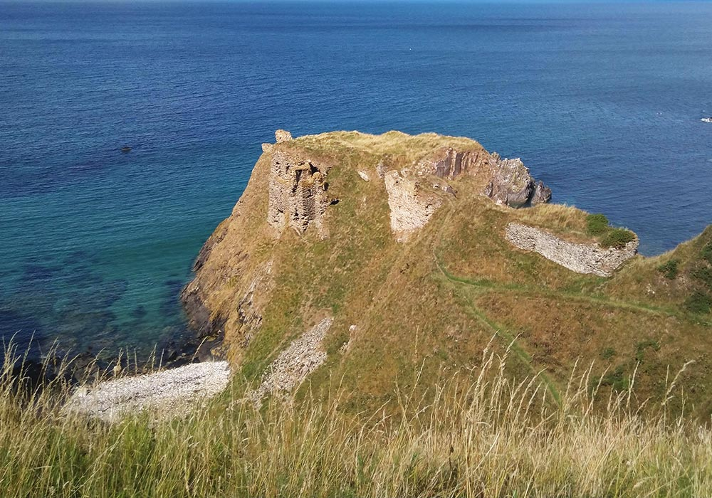Findlater Castle is a small, ruined castle in Aberdeenshire, Scotland. It is at least eight hundred years old and is the historical seat of the Earls of Findlater and Seafield. It was abandoned in the 17th century and the ruins are now a scheduled monument, open for public exploration.
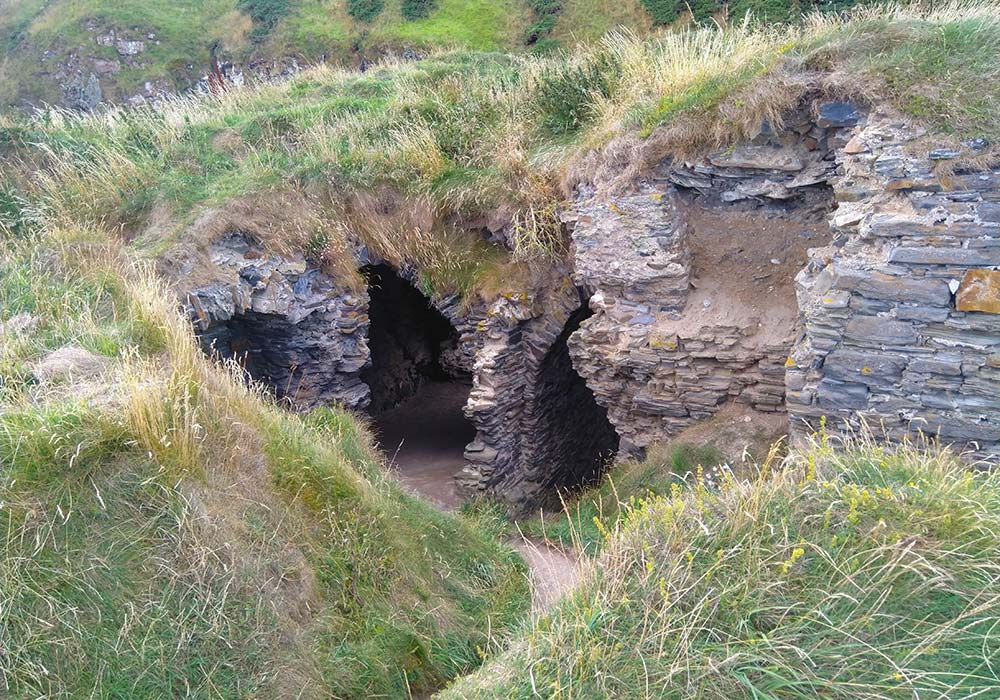
These holes in the top of the cliff are the only safe way to enter the ruins. The floors above have all fallen into the sea.
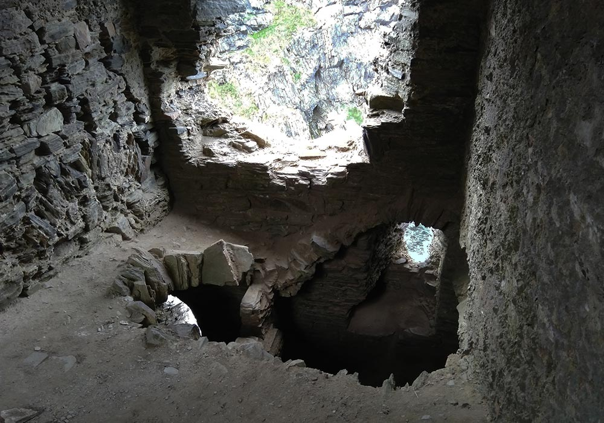
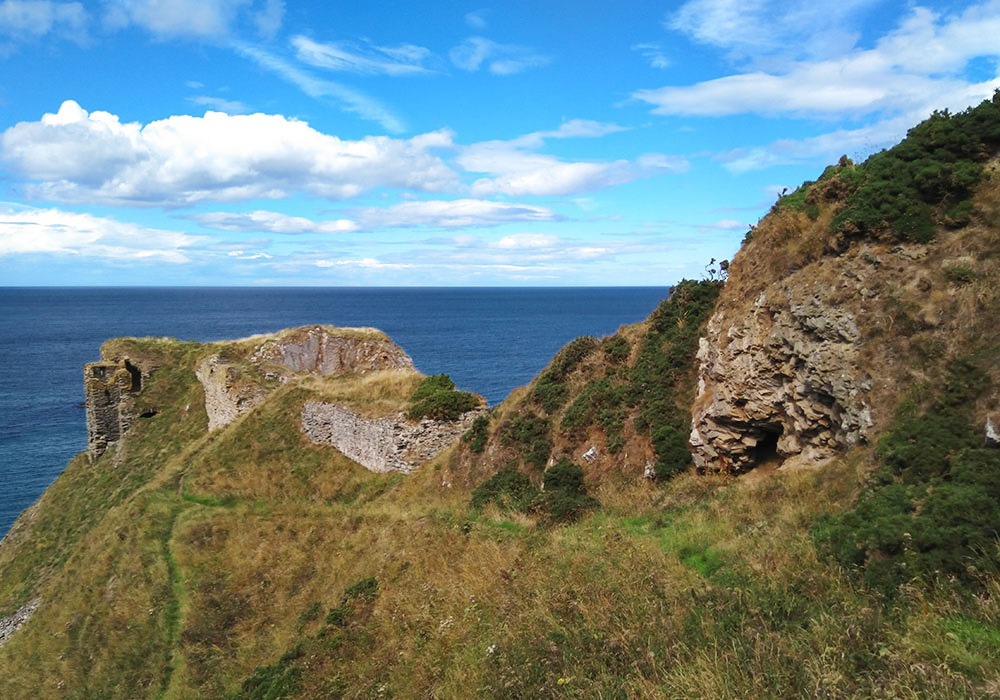
There is only one surviving staircase, so you have to climb through the floor to access most of the rooms.
ABERDEENSHIRE
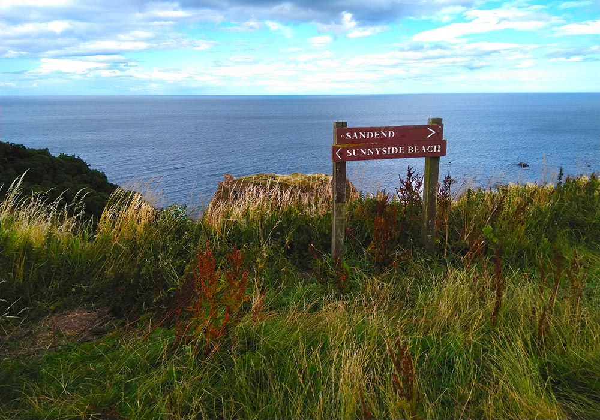These pictures were all taken in Aberdeenshire, a historic county of northeastern Scotland, on the Moray Firth coast. Sandend is a fishing town that dates back to the 19th century - fishing is still Aberdeenshire's biggest industry.
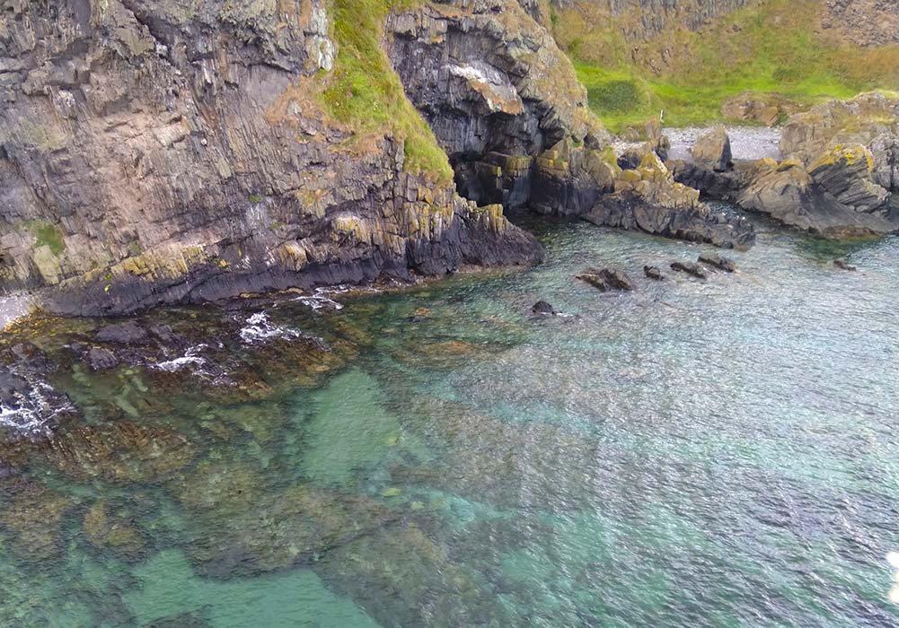
This unnamed inlet is located next to Findlater Castle's ruins.
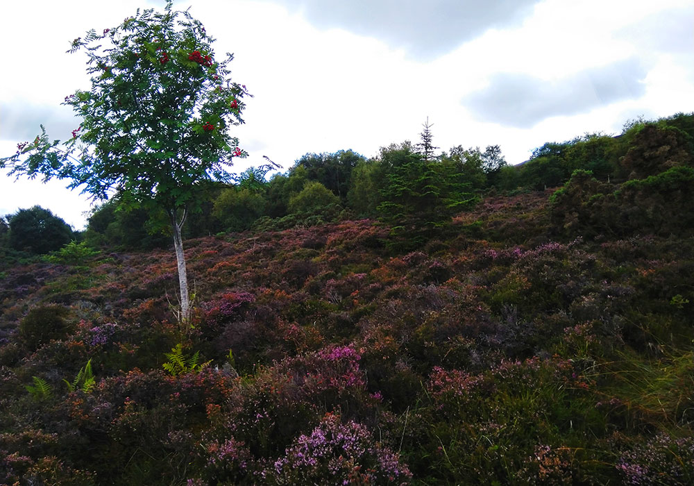
This is the side of a large, solitary hill near Portsoy.

A makeshift stone circle has been constructed on this hilltop to mimic the ancient stone circles that are common throughout England.
EDINBURGH CASTLE
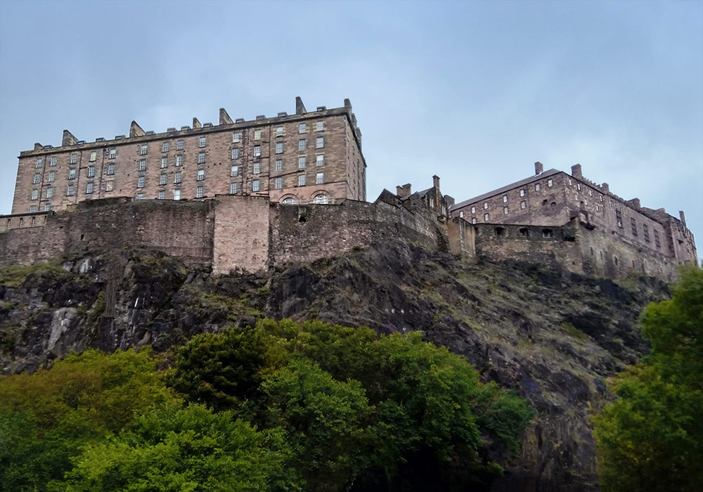Edinburgh Castle is a historic fortress that has overlooked the city of Edinburgh for over a thousand years. Castle Rock has been inhabited since the Iron Age, and the castle itself dates back to the 12th century. As one of the most important strongholds in the Kingdom of Scotland, the castle is one of the most besieged places in history.
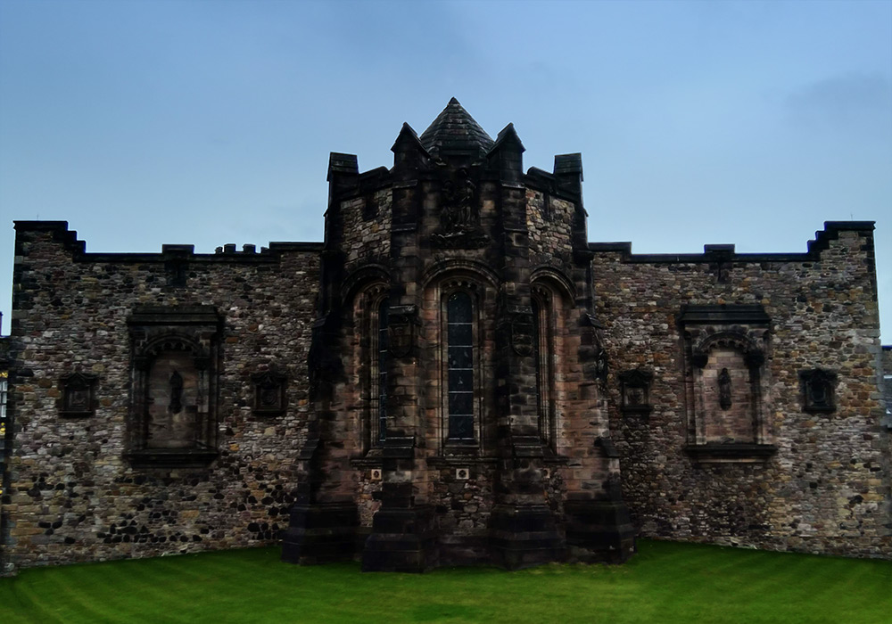
The Scottish National War Memorial from the north, located in refurbished barracks on castle grounds
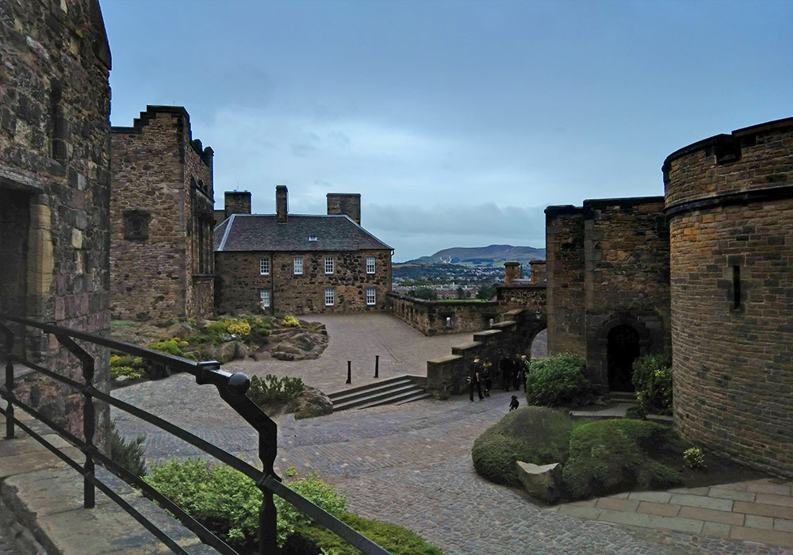
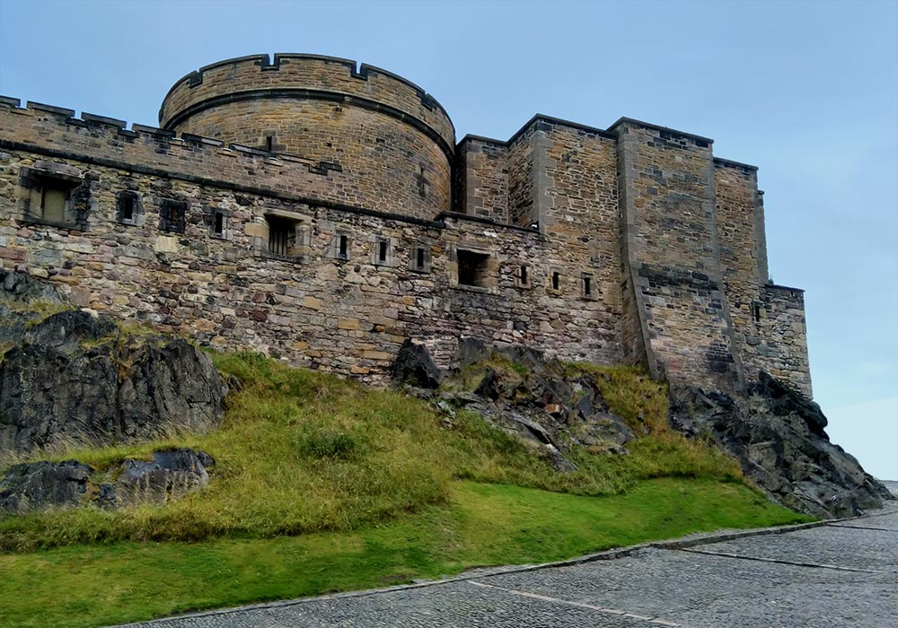
A courtyard at the west end of the castle, facing the Royal Scots Regimental Museum